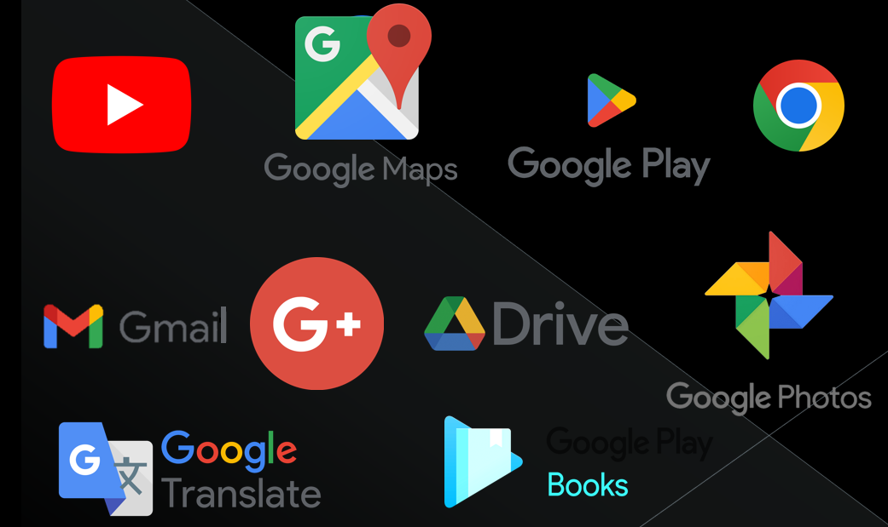

Google (LLC) es una compañía de la estadounidense Alphabet cuya especialización son los productos y servicios relacionados con internet, software, dispositivos electrónicos y otras tecnologías. El producto principal es el motor de búsqueda de contenido en internet del mismo nombre, también ofrece otros productos y servicios como: google drive, el correo electrónico (gmail), un servicio de mapas como: google maps, google Street view y google Earth, también un servicio de videos como: YouTube y otros más también como: google libre, google noticias, google chrome y la red social google+.
Con miles de servidores y centros de datos de todo el mundo, google es capaz de procesar más de 1000 millones de peticiones de búsquedas diarias y su motor de búsqueda es el más usado a nivel mundial tal como se muestra en el ranking web internacional.
Comercialización y distribución
El elemento más presente en la comercialización es la publicidad para introducir algún producto o servicio al mercado. Las etapas del ciclo de vida y el precio están presentes en sus productos electrónicos, pero no en sus servicios.
Claramente, se puede decir que Google adopta el método de comercialización a distancia (por sus servicios digitales) y, en menor medida, física.
Lo que hacen es hacer publicidades de los productos y actualizaciones nuevos en las aplicaciones que han creado para haci hacer conocer el nuevo producto. Mediante google adwords que es su propio método de promocionarse y publicitar sus productos a los usuarios
Historia
Proveedores y Clientes
Google no tiene un cliente en si definido sino que sus usuarios en si serian los clientes que disponen ya que estan en todos los países, hablan muchos idiomas y todos tienen diferentes intereses.
Los Proveedores con los que Google cuenta son servicios de Google Play que contribuye a que los dispositivos Android sean seguros y fiables, y se encarga de mantenerlos actualizados con las funciones de seguridad más recientes, como estas: Google Play Protect, que puede advertir a los usuarios si una aplicación contiene software malicioso conocido.
Productos

Preguntas Frecuentes
¿Cuántos empleados tiene la empresa de Google?
Descripción: Google Inc. es una multinacional estadounidense de tecnología con más de 60.000 empleados en más de 50 países. Los empleados de Google, que se hacen llamar googlers, tienen la suerte de trabajar en una empresa que les considera su valor fundamental y que, por tanto, les cuida en consonancia.
¿Cuántas horas se trabaja en Google?
El 65% de empleados de Google trabajan entre 3 y 6 horas al día. La mayoría de los de Microsoft, eBay y Twitter trabajan entre 3 y 4 horas al día, con un 32, 43 y 36% de los empleados situándose en esta franja, respectivamente.
¿Por qué Google es el mejor lugar para trabajar?
Múltiples espacios de disfrute y socialización, así como el acceso permanente a alimentos gratuitos y sabrosos, y la posibilidad de concurrir al trabajo en compañía de niños y mascotas, hacen de Google un sitio de trabajo valorado y exótico.
¿Cómo de difícil es entrar en Google?
Es decir, que sólo una de cada 428 solicitudes alcanza la meta soñada de trabajar en la empresa. Esto significa que tenemos un 0,23% de posibilidades de entrar a formar parte del personal de la compañía. Esto supone que sea más difícil trabajar en Google que entrar en Harvard, Yale o Stanford.
¿Qué se debe saber para trabajar en Google?
Tener estudios de grado en los campos de ciencia, tecnología, ingeniería o matemáticas, por ejemplo. Otro de los requisitos para trabajar en Google es contar con experiencia en proyectos. Si bien no es excluyente, te sumará puntos a la hora de evaluarte.
¿Qué carreras ofrece Google?
Obtén una credencial que pueda abrir puertas a empleos en trabajos con alta demanda.
• Soporte de TI. Los especialistas de TI solucionan problemas para que las computadoras y las redes funcionen correctamente.
• Análisis de datos. ...
• Gestión de proyectos. ...
• Diseño de la experiencia del usuario.
¿Qué carreras son más buscadas?
Ranking de carreras con mayor demanda laboral
• Administración y Dirección de Empresas (ADE)
• Ingeniería Industrial.
• Ingeniería Informática.
• Derecho, Economía y Turismo comparten el cuarto puesto del ranking.
• Enfermería e Ingeniería Mecánica comparten el quinto lugar.
• Ingeniería Agrícola.
• Educación Primaria